Fabric Interfaces is a research on soft materials as a way to interact with retail spaces. Developed at Random Studio, it turns everyday textiles into tangible interfaces, enabling haptic and tactile interactions that no rigid screen can offer.
Purpose
Work
Company
Year
2025
Duration
2 months
Role
Researcher, Interaction Designer & Prototyper
The Challenge
Research, design and prototype new ways of interacting within retail environments. The goal was to explore intuitive, embodied experiences that could engage customers in novel ways, moving beyond traditional touchscreens and rigid interfaces.
The Solution
Three tangible interfaces made of fabric were prototyped to let people interact seamlessly with the physical environment around them. Each one shows how soft, responsive materials can offer intuitive and emotionally expressive interactions.
By integrating technology directly into everyday textiles, this approach offers a compelling, tactile alternative to the conventional, rigid screens typically found in-store.
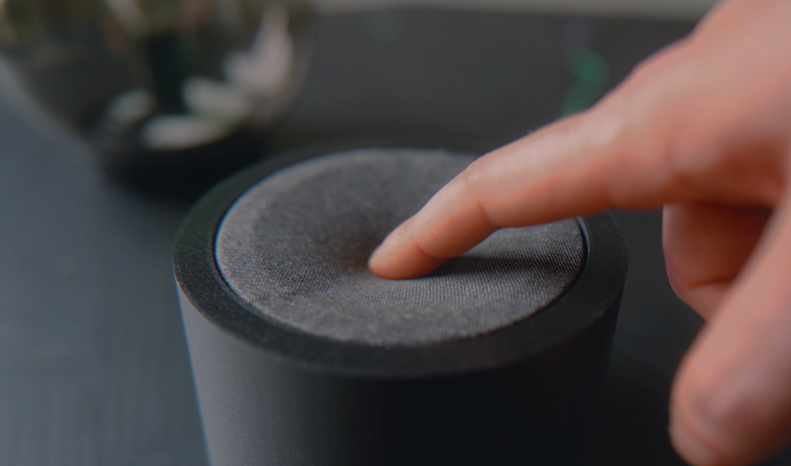
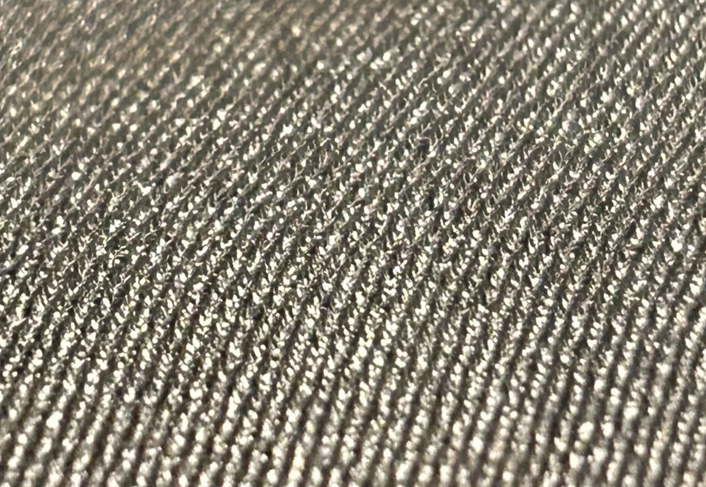
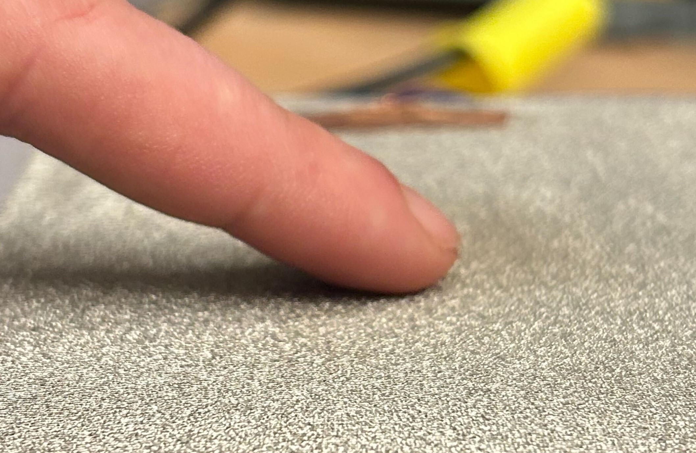
Three prototypes, one material. Each one takes a gesture people already know and gives it to the fabric.
01 — Switch Button
A fabric button that simply turns a light on or off. It translates a familiar binary gesture, a press, into a soft, tactile interaction with the material itself.
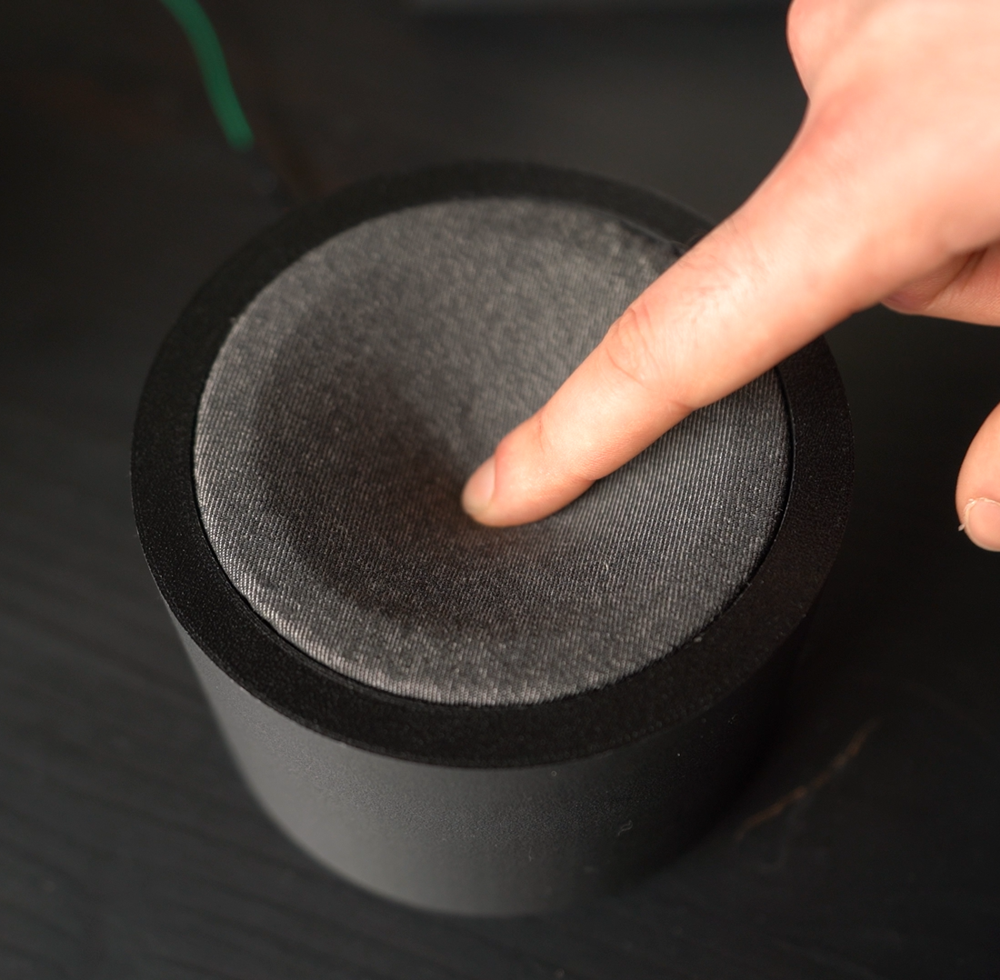
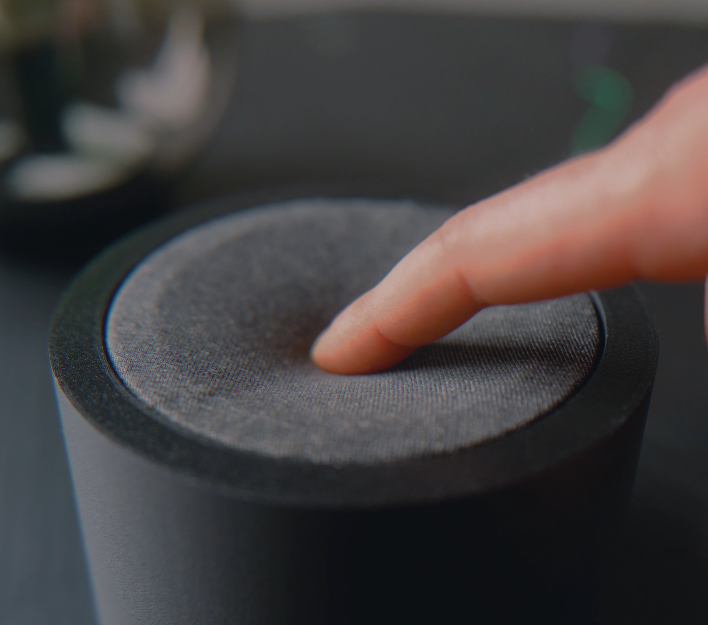
02 — Approach
A fabric panel that senses the proximity of a hand and shifts the light's hue accordingly, growing more intense as the hand approaches until it responds to touch. The act of getting closer becomes a gradual, expressive dialogue with the material.
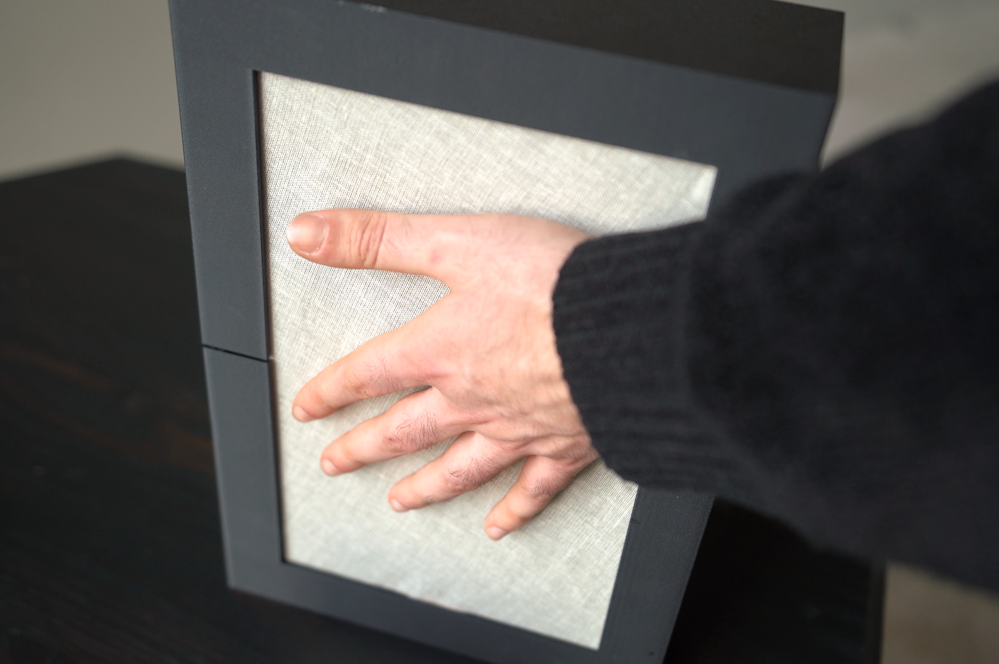
03 — Curtain
A scaled reproduction of a curtain that, when touched, activates a small fan. Direct contact with the fabric is linked to a physical response in the surrounding air.
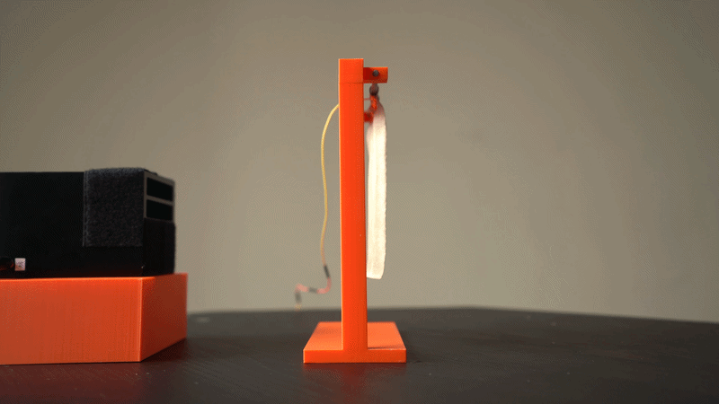
Under the fabric
The work started from existing textile interfaces and soft robotics projects, then moved to controller concepts built on gestures that feel natural with soft materials: squeezing, stretching, folding, pressing.
Different conductive fabrics were tested in various materials and configurations to understand the potential and limits of each in detecting touch and pressure. The fabric was then connected to a microcontroller, first an Adafruit Feather, then a XIAO ESP32 S3 for its Wi-Fi, both with double-sided conductive copper tape and with conductive thread, to see which method was more reliable and durable.
The data from the fabrics was sent via MQTT to the studio's Home Assistant system, so that specific devices could be controlled through smart plugs.
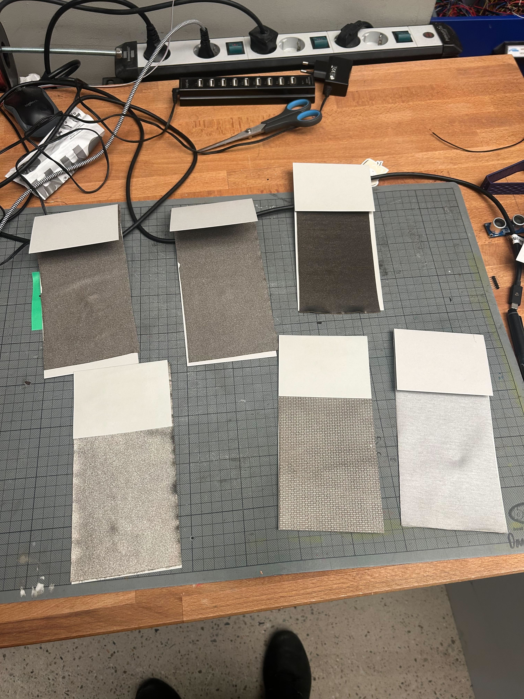
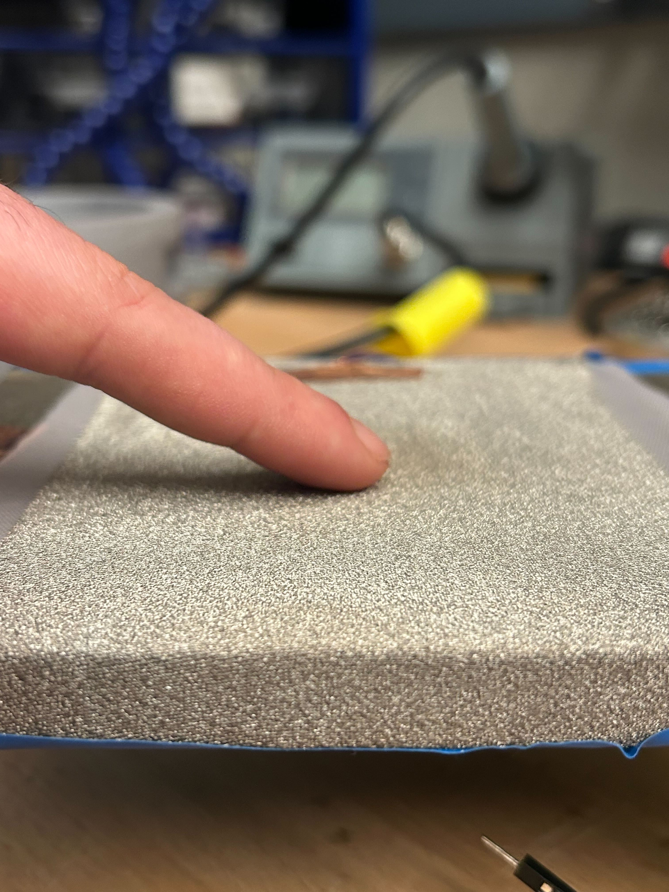
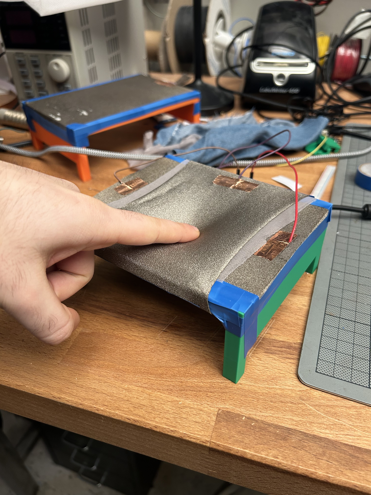
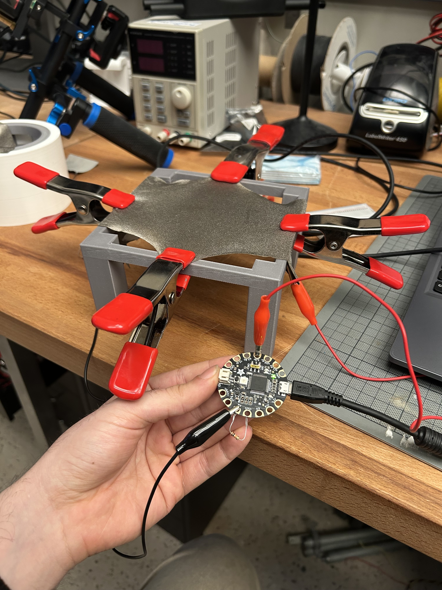
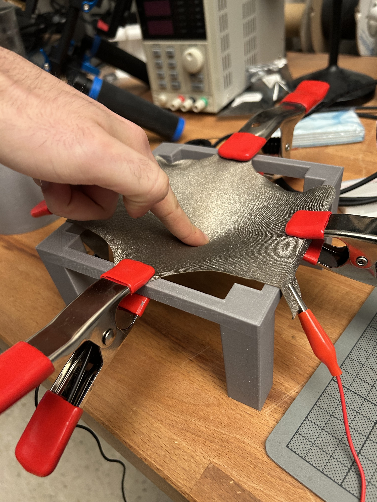
Fabric Interfaces
Research Project — 2025